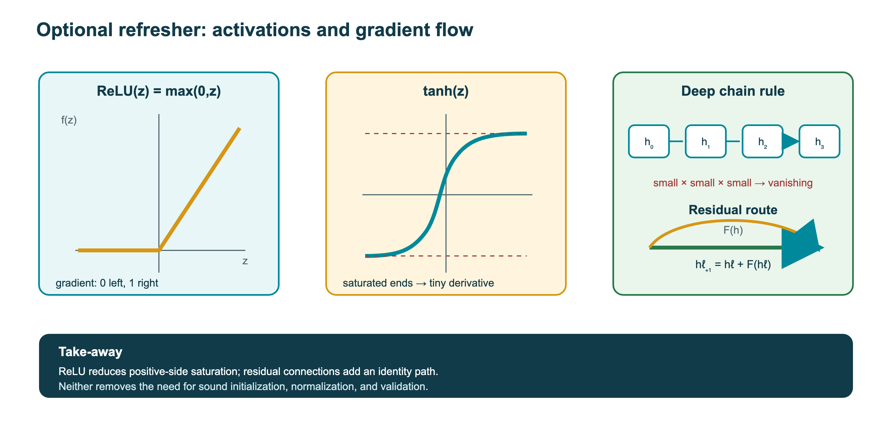
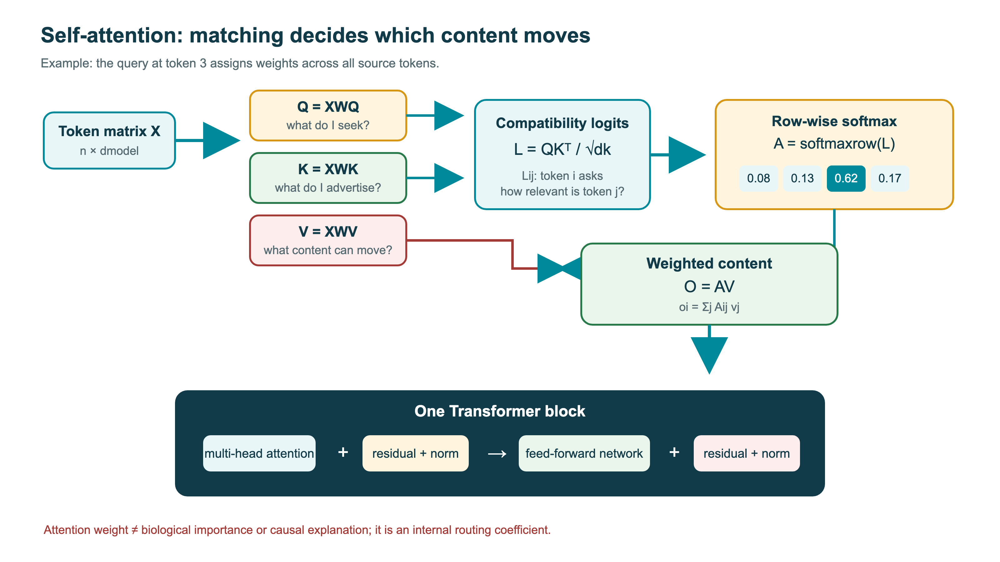
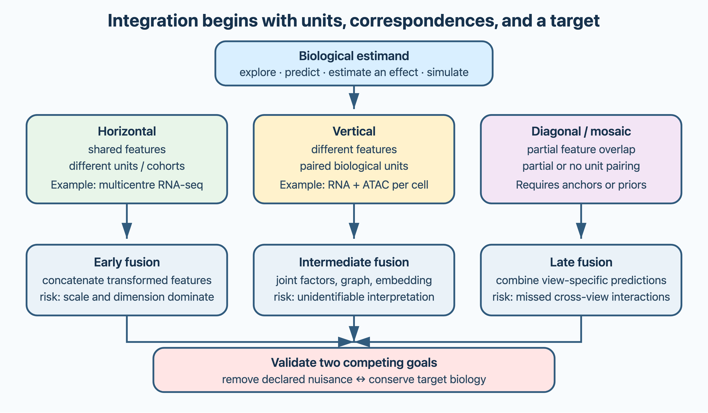
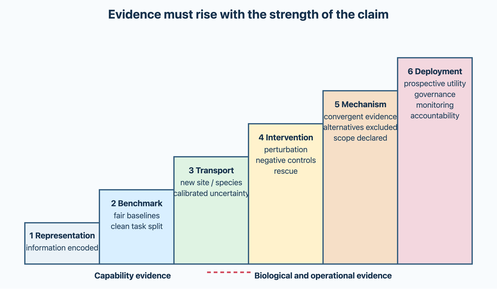

12 Machine learning
Fundamental knowledge about machine learning. How machine learning is used in bioinformatics. Recent progress in machine learning methodologies.
12.1 Overview
Machine learning is now part of almost every area of bioinformatics, and recent progress in deep learning has changed several of them completely. This chapter cannot include everything. It covers the minimum that every bioinformatician should understand, which corresponds roughly to the course Machine learning for bioinformatics (KB8029), and points to the applications described in the other chapters:
- the basics: kinds of learning, linear models and regularisation, generalisation and overfitting, the pitfalls of biological data, how to evaluate predictors, and reporting standards (Section 12.2);
- the history: the perceptron, neural networks and backpropagation, hidden Markov models, support vector machines and random forests (Section 12.3);
- deep learning: training deep networks, convolutional, recurrent, transformer and graph networks, self-attention, language models for proteins and DNA, and interpretability (Section 12.4);
- generative models: autoregressive models, autoencoders, GANs and diffusion (Section 12.5);
- foundation models and how to evaluate them (Section 12.6);
- integrating data: multi-omics integration, latent factors and networks, and what integration can and cannot show about causes (Section 12.7);
- AI in research practice: what large language models are, what they have achieved in biology, and how to use AI tools responsibly (Section 12.8).
Applications are found throughout the book: profile HMMs and protein language models in Chapter 1, gene finding in Chapter 5, single-cell analysis in Chapter 7, de novo peptide sequencing in Chapter 8, structure prediction and design in Chapter 9, function and variant effect prediction in Chapter 10, and image analysis and virtual cell models in Chapter 13.
12.2 Basics
Machine learning (ML) is a set of methods that learn patterns from data instead of having them programmed explicitly. Bioinformatics has used ML since the early 1980s, and it is now part of almost every area covered in this book (Tarca et al. 2007; Greener et al. 2021; Sapoval et al. 2022). This section covers the minimum needed to use and evaluate ML methods: the kinds of learning, linear models and regularisation, generalisation, the pitfalls specific to biological data, evaluation and reporting.
The terms overlap but are not synonyms.
- Artificial intelligence (AI) is the broad goal of machines performing tasks that are thought to require intelligence. It includes rule-based systems that do not learn from data.
- Machine learning (ML) is the part of AI in which a model learns its parameters from data. It includes linear and logistic regression, HMMs, SVMs and random forests.
- Deep learning is the part of ML that uses neural networks with many layers, which learn their own features from raw input (Section 12.4).
- Generative AI refers to models that generate new data, such as text, images, sequences or structures (Section 12.5). Not all generative models are deep.
- A foundation model is a model, usually deep and pre-trained with self-supervision on broad data, that is used for many downstream tasks (Section 12.6). The term describes how a model is used, not its size. Large language models (LLMs) are foundation models for text.
12.2.1 Kinds of learning
- In supervised learning, a model is trained on labelled examples, pairs of inputs \(\mathbf{x}\) and outputs \(y\), to predict \(y\) for new inputs. If \(y\) is a category (signal peptide or not; cell type), the task is classification; if it is a number (binding affinity; expression level), it is regression.
- In unsupervised learning, there are no labels. The model finds structure in the data, for example clusters or low-dimensional representations (principal component analysis, t-SNE and UMAP; Section 7.4).
- In self-supervised learning, the model creates its own labels from the data, for example by hiding some residues of a protein sequence and predicting them from the rest. This makes it possible to train on hundreds of millions of unlabelled sequences, and it is the basis of language and foundation models (Section 12.6).
In all cases, a model is a function \(f(\mathbf{x}; \boldsymbol{\theta})\) with parameters \(\boldsymbol{\theta}\) (weights), and training means choosing \(\boldsymbol{\theta}\) to minimise a loss function on the training data, such as the squared error for regression or the cross-entropy for classification. For most models this is done with gradient descent: the parameters are moved a small step against the gradient of the loss, \(\boldsymbol{\theta} \leftarrow \boldsymbol{\theta} - \eta \nabla L\), where \(\eta\) is the learning rate. The gradient is usually computed on small random batches of data (stochastic gradient descent), and momentum-based optimisers such as Adam speed up and stabilise the descent.
12.2.2 Linear models and regularisation
The simplest supervised models are linear, and they should be the first baseline for most problems. Linear regression models the outcome as a weighted sum of the features, \(y = \beta_0 + \mathbf{x}^T\boldsymbol{\beta} + \epsilon\), and ordinary least squares chooses the weights that minimise the squared error. Logistic regression models a binary outcome through its log odds,
\[ \log \frac{p}{1-p} = \beta_0 + \mathbf{x}^T\boldsymbol{\beta}, \qquad p = P(y = 1 \mid \mathbf{x}), \]
and is fitted by maximum likelihood, which is the same as minimising the cross-entropy loss. A coefficient \(\beta_j\) describes how the prediction changes with \(x_j\) when the other features in the model are held fixed; in logistic regression, \(e^{\beta_j}\) is an odds ratio. These are conditional associations, not causal effects, and they change if correlated features are added or removed. Linear and logistic regression are special cases of generalised linear models, which also include the negative binomial models used for read counts (Section 7.4).
With many more features than examples, which is the normal situation in omics (20 000 genes and perhaps 100 patients), an unpenalised linear model fits the training data perfectly and generalises poorly. Regularisation adds a penalty on the size of the weights to the loss, \(L(\boldsymbol{\beta}) + \lambda P(\boldsymbol{\beta})\), and the strength \(\lambda\) is a hyperparameter:
- L2 (ridge) regression uses \(P = \sum_j \beta_j^2\). It shrinks all weights smoothly towards zero but rarely sets any to exactly zero, and it stabilises the fit when features are correlated by spreading the weight over them (Hoerl and Kennard 1970).
- L1 (the lasso) uses \(P = \sum_j |\beta_j|\). Because the penalty has corners on the axes, many weights become exactly zero, so the lasso also selects features and gives a sparse model (Tibshirani 1996).
- The elastic net combines the two penalties. It selects features like the lasso, but tends to keep or drop groups of correlated features together (Zou and Hastie 2005).
A common mistake is to reverse L1 and L2: it is L1 that gives sparse models. The penalties act on the size of the weights, so features must be put on comparable scales, for example standardised, before fitting, and \(\lambda\) must be chosen inside the training data, by (nested) cross-validation (below). A sparse “signature” of genes selected by the lasso is a predictive model, not a list of causal genes. When genes are correlated, as genes in the same pathway usually are, the lasso picks one of them more or less arbitrarily, and a different sample of patients can give a different signature with the same performance. The stability of the selection should therefore be checked by resampling.
12.2.3 Generalisation and overfitting
The goal of a model is not to fit the training data but to make correct predictions on new data, to generalise. A flexible model with many parameters can memorise its training set, including its noise, and then perform poorly on new data. This is overfitting. A model that is too simple cannot capture the pattern at all (underfitting). The balance is described by the bias–variance trade-off (Lever et al. 2016; Hastie et al. 2009).
Overfitting is controlled by:
- Separate data sets. Data are split into a training set, used to fit the parameters, a validation set, used to choose hyperparameters and compare models, and a test set, used once at the end to estimate performance. If the test set is used for any modelling decision (choosing features, hyperparameters, architectures or which of several models to report), it has in effect become a validation set and its estimate is optimistic. A new, untouched test set is then needed.
- Cross-validation. With little data, the data are divided into \(k\) parts; each part is used once for evaluation while the model is trained on the rest, and the results are averaged. If hyperparameters are also chosen by cross-validation, the error of the best setting is optimistic, because it was selected on the same data. Nested cross-validation avoids this: an inner loop, run only on the training part of each outer fold, selects the hyperparameters, and the outer loop estimates the performance of the whole procedure, selection included. This matters most for small data sets, where the optimism of selection can be large (Varma and Simon 2006; Hastie et al. 2009).
- Regularisation. Penalising large weights (L1 or L2, above; L2 is called weight decay in neural networks), stopping training when the validation error starts to increase (early stopping), or randomly switching off units during training (dropout) (Srivastava et al. 2014).
- More data, or data augmentation.
The same idea appears in structural biology: the free R-factor of crystallography is a held-out test set (Section 9.3). Biological data add problems of their own, which are the subject of the next subsection.
12.2.4 Pitfalls specific to bioinformatics
Biological data violate the assumption, made by most ML methods, that examples are independent. The most important consequence is that a random split into training and test sets is rarely appropriate. Related examples, such as homologous proteins, samples from the same patient, cells from the same donor or experiment, or genomic windows from the same chromosome, end up on both sides of a random split, and the measured performance can be grossly overestimated. Data should instead be split by group (all examples from one cluster, patient, donor or chromosome go to the same subset), by time, or by both, so that the test set resembles the new data the method will actually be used on.
- Homology between training and test sets. Proteins and genes are related by evolution. If a test protein has a close homologue in the training set, the model can predict it by remembering the homologue, and the measured performance says little about new families. Data sets must therefore be redundancy-reduced, and split so that no test example is too similar to any training example. Hobohm and colleagues introduced algorithms for selecting representative, non-redundant protein sets (Hobohm et al. 1992), and today sequences are clustered with tools such as CD-HIT or MMseqs2 (Li and Godzik 2006; Steinegger and Söding 2018), with all members of a cluster placed in the same subset. Simple clustering can leave close homologues in different subsets, and partitioning algorithms such as GraphPart construct splits in which no test sequence is above a chosen similarity to any training sequence, while keeping the classes balanced (Teufel et al. 2023). For structures, splits by fold or by date (training on structures released before a cutoff, testing on later ones) are stricter.
- Data leakage. Information about the test set can leak into training in less obvious ways: through features computed from the whole data set, through normalisation, through the same patient or experiment appearing in both sets, or through benchmark data that have been used to develop earlier versions of the method. Every step that learns from the data, including normalisation, imputation, feature selection, batch correction, oversampling of the rare class and calibration, is part of the model and must be fitted on the training part of each split only. A classic example is selecting the genes most correlated with the outcome on the whole data set and then cross-validating a classifier on those genes: the estimated error can be close to zero even when the labels are random (Ambroise and McLachlan 2002). A survey of many fields found that leakage of this kind was widespread in machine-learning-based science, and that correcting it often removed the claimed advantage of complex models (Kapoor and Narayanan 2023).
- Class imbalance. Most biological prediction problems are imbalanced: few residues are in binding sites, few variants are pathogenic, few protein pairs interact. A classifier that always predicts the majority class can have high accuracy and be useless.
- Biased and noisy labels. Labels come from databases with their own biases (Section 10.7), and the negatives are often not true negatives.
- Distribution shift. A model can perform well on held-out data from the same source and fail when the data change: a new species, protein family, hospital, sequencing technology or laboratory protocol. Performance should therefore be reported for the kind of data the model will be applied to, and a test set from a different source (external validation) is the best check.
- Prediction is not causation. A predictor may exploit any correlation in the data, including confounders such as batch, sequencing depth or ancestry, without capturing the underlying mechanism. A gene whose expression predicts a disease need not cause it, and a feature that is important for a model is not necessarily important biologically. Explaining and predicting are different goals, and a model that is best for one is often not best for the other (Shmueli 2010). Causal inference is discussed in Section 12.7.
12.2.5 Evaluation
For a binary classifier, predictions are summarised in a confusion matrix of true positives (TP), false positives (FP), true negatives (TN) and false negatives (FN). Common measures are:
| Measure | Definition | Question it answers |
|---|---|---|
| Accuracy | \((TP+TN)/(TP+FP+TN+FN)\) | What fraction is correct? |
| Sensitivity (recall) | \(TP/(TP+FN)\) | What fraction of the positives is found? |
| Specificity | \(TN/(TN+FP)\) | What fraction of the negatives is correctly rejected? |
| Precision | \(TP/(TP+FP)\) | What fraction of the predicted positives is correct? |
| F1 score | \(2 \cdot \text{precision} \cdot \text{recall} / (\text{precision} + \text{recall})\) | Harmonic mean of precision and recall |
These measures are not interchangeable. The false-positive rate (\(FP/(FP+TN) = 1-\) specificity) is computed over the negatives, whereas the false discovery rate (\(FP/(TP+FP) = 1-\) precision) is computed over the predictions; with many negatives, a low false-positive rate can coexist with a high false discovery rate. Accuracy is often misleading for biological problems, because the classes are imbalanced: if 1% of residues are in binding sites, predicting “no” everywhere is 99% accurate.
The Matthews correlation coefficient,
\[ \text{MCC} = \frac{TP \cdot TN - FP \cdot FN} {\sqrt{(TP+FP)(TP+FN)(TN+FP)(TN+FN)}}, \]
is the correlation between predicted and true labels. It ranges from \(-1\) to \(1\), is 0 for random predictions, and is high only if the classifier does well on both classes, so it is more informative than accuracy or F1 for imbalanced data (Chicco and Jurman 2020). It is the phi coefficient of statistics; Matthews introduced it in 1975 to compare predicted and observed secondary structure (Matthews 1975). Sensitivity, specificity, precision and MCC, reported together, are the core measures for a binary classifier.
Most classifiers output a score, and the measures above depend on the threshold. Two curves describe performance over all thresholds:
- The ROC curve plots sensitivity against the false-positive rate ($1 - $ specificity). The area under it (AUC or AUROC) is the probability that a random positive is scored higher than a random negative: 0.5 for random and 1 for perfect. The ROC curve does not depend on the proportion of positives, which is why it can look excellent when positives are rare while precision is poor.
- The precision–recall curve plots precision against recall, and the area under it (AUPRC or PR-AUC, close to the average precision) summarises it. A random classifier has a precision equal to the fraction of positives, not 0.5. For imbalanced problems, where the relevant question is how many of the top predictions are correct, it is more informative than the ROC curve, since a small false-positive rate can still mean many false positives (Saito and Rehmsmeier 2015). For example, with 100 true binding residues among 10 000, a false-positive rate of 1% gives about 100 false positives, so even if every true site is found, half of the predictions are wrong.
In practice a method is used at one threshold, so performance should also be reported at the operating point that will be used, for example the precision at a given recall or the sensitivity at 1% false-positive rate.
Ranking and calibration. AUC measures only how well a method ranks examples, not whether the scores are probabilities. A model is calibrated if, among all examples given a score of 0.9, about 90% are positive. Many models are not: an output of 0.9 from a neural network or a random forest is a score, not a 90% probability, unless calibration has been checked. Calibration is assessed with a reliability diagram (calibration curve), which plots the observed fraction of positives against the predicted probability in bins, and can be corrected afterwards on held-out data, for example by Platt scaling (fitting a logistic function to the scores) or isotonic regression. Calibration also depends on the proportion of positives: a model calibrated on a balanced training set will overestimate probabilities when positives are rare in practice. Calibrated probabilities are needed when scores are combined with costs to choose a threshold, or interpreted as confidence for a single prediction.
The quality of probabilities can be summarised with a proper scoring rule, which is optimised only by the true probabilities: the Brier score, \(\frac{1}{n}\sum_i (p_i - y_i)^2\), the mean squared difference between the predicted probability and the outcome (0 or 1), or the log loss, which penalises confident errors heavily.
Discrimination, calibration and the choice of threshold answer three different questions: can the model rank positives above negatives, do its probabilities mean what they say, and which errors matter when it is used? The threshold is a decision, not a property of the model. It should be chosen on validation data, not the test set, from the costs of the two kinds of error: a missed pathogenic variant is usually worse than one more variant to check.
For regression, performance is measured with the correlation (Pearson or Spearman) or the mean squared error between predicted and true values.
Two kinds of uncertainty are often distinguished. Aleatoric uncertainty is noise in the data themselves, such as measurement error or genuinely variable outcomes, and does not decrease with more data. Epistemic uncertainty is the model’s lack of knowledge, which is large for inputs unlike the training data (for example a protein from an unseen family) and can be reduced with more data. Ensembles of models that disagree on an input are a common indicator of epistemic uncertainty.
Benchmark design. How the test data are chosen matters as much as the measure. In a retrospective benchmark, methods are tested on data that already exist, often data the developers could have seen; it is easy to run but prone to leakage and repeated tuning. Stricter designs are:
- a family or cluster split, in which test examples have no close homologue (or other related example) in the training set, which estimates performance on new families;
- a temporal split, in which the method is trained on data available before a cutoff date and tested on data that appeared later, which mimics real use;
- external validation on an independent data set, from another laboratory, technology or population, which tests robustness to distribution shift;
- a prospective or blind benchmark, in which predictions are made before the answers are known and are assessed by others.
Blind benchmarks are the most reliable way to compare methods, because the test data do not exist when the methods are developed. Bioinformatics has a strong tradition of such community experiments: CASP for structure (Section 9.7), CAFA for function (Section 10.7), CAGI for variants (Section 10.6), CAMI for metagenomics (Section 5.5) and DREAM for networks (Section 11.2). Every new method should also be compared with a simple baseline, such as nearest-neighbour transfer by BLAST, logistic regression or the most frequent class. Sophisticated methods often do not beat them by much (citation needed).
12.2.6 Reporting standards
As ML spread through biology, the quality of studies varied widely. Common problems were inadequate test sets, data leakage, missing baselines, and code or data that were not available (Jones 2019). The DOME recommendations, from the ELIXIR machine learning focus group, ask authors to report four aspects of a supervised ML study: Data (sources, size, splits, redundancy between them), Optimisation (algorithm, hyperparameters, how overfitting was prevented), Model (availability, interpretability) and Evaluation (metrics, comparison with baselines and other methods, confidence) (Walsh et al. 2021). They summarise this section as a checklist, both for designing studies and for reading them critically. The same questions apply to the more complex models of the following sections, beginning with the methods from which modern ML in bioinformatics grew (Section 12.3).
See also: further explanation in Section D.12.1; related Wikipedia articles in Section E.12.1.
Parts of this section are adapted from the Wikipedia articles Machine learning, Overfitting, Cross-validation (statistics), Precision and recall, Phi coefficient, Probabilistic classification and Receiver operating characteristic (CC BY-SA 4.0, retrieved 4 October 2026). Parts of this section are adapted from Matteo Tadiello, Modern Bioinformatics: From Foundations to Frontiers, chapter “Statistics and Machine Learning for Biological Data” (CC BY 4.0), used with permission.
12.3 A short history of machine learning in bioinformatics
Machine learning and bioinformatics grew up together. Many methods that are now standard were first applied to biological sequences in the 1980s and 1990s. The history explains why some ideas keep returning, and the classical methods remain the baselines against which deep models must be judged.
12.3.1 The perceptron
In 1958 Frank Rosenblatt described the perceptron, a model of a neuron that computes a weighted sum of its inputs and outputs 1 if the sum exceeds a threshold (Rosenblatt 1958):
\[ y = \begin{cases} 1 & \text{if } \mathbf{w} \cdot \mathbf{x} + b > 0 \\ 0 & \text{otherwise.} \end{cases} \]
The perceptron learning rule adjusts the weights after each mistake, and converges if the two classes can be separated by a hyperplane. A position weight matrix used to score a sequence motif (Section 1.6) is exactly such a weighted sum. In one of the first applications of ML in molecular biology, Gary Stormo and colleagues used the perceptron in 1982 to recognise translation initiation sites in E. coli (Stormo et al. 1982).
In 1969 Marvin Minsky and Seymour Papert showed that a single perceptron cannot learn functions that are not linearly separable, the classic example being exclusive or (XOR) (Minsky and Papert 1969). Their book contributed to a decline of neural network research for more than a decade. In biology, XOR-like patterns correspond to interactions between positions (epistasis), where the effect of a residue depends on another.
12.3.2 Neural networks and backpropagation
Networks with hidden layers of units with non-linear activation functions can approximate any continuous function, and a single hidden layer already solves XOR. For a long time, however, there was no efficient way to train them. Backpropagation, popularised by Rumelhart, Hinton and Williams in 1986 (Rumelhart et al. 1986), computes the gradient of the loss with respect to every weight by applying the chain rule backwards through the network, so that all weights can be trained by gradient descent (Krogh 2008).
Neural networks were applied to protein secondary structure almost immediately. Qian and Sejnowski in 1988 (Qian and Sejnowski 1988) and Holley and Karplus in 1989 (Holley and Karplus 1989) trained networks on windows of sequence, reaching 63–64% three-state accuracy. The decisive improvement came from the input, not the network: PHD fed evolutionary profiles from multiple alignments into a two-layer network and reached more than 70% (Rost and Sander 1993) (Section 9.8). This was an early example of a lesson that has been learned many times since: the representation of the data matters as much as the model. In the 1990s neural networks were also used for signal peptides (SignalP, Section 10.5) and many other sequence features, often by Danish groups around Søren Brunak and Anders Krogh.
12.3.4 Support vector machines, trees and ensembles
In the 1990s and 2000s, other methods became popular for classification with hand-crafted features:
- Support vector machines (SVMs) find the hyperplane that separates two classes with the largest margin (Cortes and Vapnik 1995; Noble 2006). Through the kernel trick, they implicitly map data to high-dimensional spaces in which non-linear problems become linearly separable, and kernels can be defined directly on sequences or structures. SVMs were used for remote homology detection, function prediction and many other problems, and are the basis of the semi-supervised rescoring in proteomics (Section 8.4).
- Decision trees split the data by asking a series of questions about the features. A single tree overfits easily, but random forests average many trees, each trained on a bootstrap sample of the data and choosing each split from a random subset of the features (Breiman 2001). Gradient boosting builds trees sequentially, each correcting the errors of the previous ones (Friedman 2001); XGBoost is a widely used implementation (Chen and Guestrin 2016).
For small, tabular data sets with well-chosen features, random forests and gradient boosting are still often as good as deep learning, are faster to train and are easier to interpret. They should be among the first baselines tried for a new problem. Deep learning (Section 12.4) took over where the input is raw sequence, images or structures, and where there are enough data to learn the features as well as the classifier.
See also: further explanation in Section D.12.2; related Wikipedia articles in Section E.12.2.
Parts of this section are adapted from the Wikipedia articles Perceptron, Backpropagation, Hidden Markov model, Support vector machine and Random forest (CC BY-SA 4.0, retrieved 4 October 2026).
12.4 Deep learning
Deep learning uses neural networks with many layers that learn their own features from raw input, rather than relying on features designed by hand (LeCun et al. 2015). It became dominant after 2012, when a deep convolutional network won the ImageNet image recognition competition by a large margin (Krizhevsky et al. 2017), made possible by large data sets, graphics processors (GPUs) and better training methods. In biology it has driven some of the largest advances since then, most notably AlphaFold (Ching et al. 2018; Eraslan et al. 2019; Sapoval et al. 2022). This section describes how deep networks are trained, the main architectures, language models for proteins and DNA, and how to interpret what a model has learned.
12.4.1 Training deep networks
Deep networks are trained with backpropagation and stochastic gradient descent, like the networks of the 1980s. The obstacle to depth was vanishing gradients. By the chain rule, the gradient for an early layer is a product of one factor per later layer. With saturating activations such as the sigmoid or tanh most of these factors are small, so the product vanishes and the early layers do not learn.
Several innovations removed this obstacle (Figure 12.1). The rectified linear unit (ReLU, \(\max(0, x)\)) has a gradient of 1 for positive inputs. Residual connections, \(\mathbf{h}_{\ell+1} = \mathbf{h}_\ell + F(\mathbf{h}_\ell)\), add the input of a block to its output and so give the gradient a direct path past each block; they allow networks with hundreds of layers to be trained (He et al. 2016). Careful initialisation, normalisation layers and adaptive optimisers such as Adam further stabilise training. Overfitting is controlled with dropout, weight decay, early stopping and data augmentation (Section 12.2).

12.4.2 Architectures
Different architectures build different assumptions about the data into the network. Choosing one is choosing which patterns the network can learn easily from limited data.
- Convolutional neural networks (CNNs) apply the same small filters at every position of an image or sequence (Lecun et al. 1998). Weight sharing means far fewer parameters than a fully connected network, and the filters learn local patterns, such as edges in images or motifs in DNA. Stacking layers with pooling lets later layers see larger regions. In genomics, CNNs learned the binding specificities of DNA- and RNA-binding proteins (DeepBind) (Alipanahi et al. 2015), predicted chromatin features and the effects of non-coding variants from sequence (DeepSEA, Basset) (Zhou and Troyanskaya 2015; Kelley et al. 2016), and, applied to coevolution matrices as images, predicted protein contact maps (Section 9.8).
- Recurrent neural networks (RNNs) process a sequence one element at a time, carrying a hidden state that summarises what has been seen. The long short-term memory (LSTM) unit uses gates to keep information over long distances (Hochreiter and Schmidhuber 1997). Bidirectional LSTMs read sequences in both directions and were used in DeepLoc and early protein language models (Almagro Armenteros et al. 2017; Heinzinger et al. 2019). RNNs are slow to train because they must process positions in order.
- Attention and transformers. Attention lets each position look directly at every other position, with weights computed from the content of the positions. The transformer architecture is built from layers of self-attention and feed-forward networks, with residual connections and normalisation (Vaswani et al. 2017). Since every pair of positions can exchange information directly in every layer, transformers can model dependencies between distant positions, such as residues that are far apart in sequence but in contact in the structure. How well they do so in practice depends on the context length (the cost of attention grows with the square of the sequence length), the training data and the architecture. Unlike RNNs, transformers process all positions in parallel, which makes training on very large data sets practical. They are the basis of large language models, protein language models and AlphaFold.
- Graph neural networks (GNNs) operate on graphs, passing messages between connected nodes. They are natural for molecules, protein structures (residues connected by spatial proximity) and interaction networks, and are used, for example, in structure-based function prediction and in ProteinMPNN (Section 10.4, Section 9.12). Architectures that respect the symmetries of three-dimensional space, such as AlphaFold’s invariant point attention, are related.
Autoencoders, generative adversarial networks and diffusion models are built from the same components, but are trained to generate data rather than to predict labels (Section 12.5).
12.4.3 Self-attention
Self-attention is the core of the transformer. Each token (a residue, a base or an image patch) is represented by a vector, and three learned linear maps turn the matrix of token vectors \(X\) into queries \(Q\), keys \(K\) and values \(V\). The output is
\[ \text{Attention}(Q, K, V) = \text{softmax}\left(\frac{QK^T}{\sqrt{d_k}}\right) V, \]
where \(d_k\) is the dimension of the keys. Each row of the softmax gives the weights with which one token collects information from all the others (Figure 12.2). Multi-head attention runs several such operations in parallel with different projections. Attention by itself ignores the order of the tokens, so information about their positions must be added to the input. The \(L \times L\) matrix of weights for a sequence of length \(L\) is the source of the quadratic cost, which matters for whole chromosomes, long reads and large sets of cells.

12.4.4 Language models for proteins and DNA
Applied to sequences, transformers are mostly used as language models. Language models are trained, self-supervised, to predict missing or next tokens in sequences. For proteins the tokens are amino acids; for DNA they are single bases or k-mers. Two training objectives dominate:
- masked-token prediction (as in BERT (Devlin et al. 2019)): a fraction of the tokens, about 15%, is hidden and predicted from the context on both sides. ESM-2, ProtBert, DNABERT and the Nucleotide Transformer are trained this way (Lin et al. 2023; Elnaggar et al. 2022; Ji et al. 2021; Dalla-Torre et al. 2024). Such models are mainly used to produce embeddings and to score mutations;
- next-token prediction (autoregressive, as in GPT): each token is predicted from the tokens before it. ProGen, ProtGPT2 and Evo are trained this way (Madani et al. 2023; Ferruz et al. 2022; Nguyen et al. 2024), and can generate new sequences one token at a time (Section 12.5).
In both cases, the labels come from the sequences themselves, which is what makes it possible to train on all known sequences. Models such as ESM (Rives et al. 2021; Lin et al. 2023) and ProtTrans (Elnaggar et al. 2022), trained on hundreds of millions of sequences from UniProt and metagenomes, learn embeddings, vector representations of each residue and each protein, that capture structure, function and evolutionary constraints without ever being shown them. Their history and architecture are described in Section 1.10, and their use for structure prediction in Section 9.9.
The embeddings enable transfer learning: a large model is pre-trained once on unlabelled sequences, and its representations are then used as input for many downstream tasks with little labelled data, such as localisation (DeepLoc 2, SignalP 6; Section 10.5), variant effects (Section 10.6) or function (Section 10.4). A small model on top of the embeddings, or fine-tuning of the whole model, often matches or beats specialised methods.
For DNA, language models face longer sequences and a sparser signal, since most of the genome is not under strong constraint (Section 6.9). DNABERT (Ji et al. 2021) and the Nucleotide Transformer (Dalla-Torre et al. 2024) adapted the transformer to DNA. Evo, trained on prokaryotic and phage genomes, and Evo 2, trained on genomes from all domains of life, can generate megabase-scale genomic sequences; Evo 2 reads up to a million bases at a time (Nguyen et al. 2024; Brixi et al. 2025). A complementary approach trains supervised models to predict experimental measurements, such as gene expression, chromatin accessibility and splicing, directly from long DNA sequences: Enformer (Avsec et al. 2021) and AlphaGenome (Avsec et al. 2026) use this to predict the effects of non-coding variants.
12.4.5 Interpretability and feature importance
A model that predicts well is not necessarily understood: what it has learned, and whether that is biology or an artefact of the data, must be examined separately. Deep networks are often described as black boxes. Several methods try to explain what they have learned (Novakovsky et al. 2022): attribution methods, such as saliency maps and in silico mutagenesis, ask which input positions influence a prediction most, and can reveal the motifs a genomics model has learned; attention weights can be inspected, for example showing that protein language models attend to residues in contact (Rao et al. 2020); and models can be probed with designed inputs. Attention weights are not by themselves explanations: a position that receives high attention need not be the one that changes the prediction, and showing that an input causes an output requires further analysis, such as perturbing the input and measuring the effect. Explanations are useful for finding errors and generating hypotheses, but they are themselves approximations and should not be over-interpreted.
The same caution applies to the importance measures used for any model, including linear models and random forests.
- Coefficients of a linear model depend on the scaling of the features and on which other features are included (Section 12.2).
- Impurity-based importance in random forests favours features with many possible split points, such as continuous features.
- Permutation importance measures how much the performance drops when one feature is shuffled. When two features are correlated, the model can use either, and shuffling one of them may change little, so both can appear unimportant.
- SHAP values distribute a single prediction among the features, using Shapley values from game theory, relative to a chosen background set of examples. Integrated gradients sum the gradients of the output along a path from a reference input (for example an all-zero or shuffled sequence) to the actual input.
All of these describe how a particular model makes its predictions. The result depends on the reference or background, on how the features are represented and on how they are correlated, and should be checked for stability across resamples. None of them estimates the effect of changing the feature in a real cell or patient. If a model of drug response gives the largest SHAP value to an immune gene, this is a hypothesis about the gene, to be tested in independent data and by perturbation, not evidence that the gene causes the response. An explanation that agrees with known biology may still reflect a confounder, such as the hospital or batch. Reporting standards for ML studies, which include interpretability, are described in Section 12.2. Models that generate new data, rather than explain or predict labels, are the subject of Section 12.5.
See also: further explanation in Section D.12.3; related Wikipedia articles in Section E.12.3.
Parts of this section are adapted from the Wikipedia articles Deep learning, Convolutional neural network, Long short-term memory, Transformer (deep learning architecture), Graph neural network and Explainable artificial intelligence (CC BY-SA 4.0, retrieved 4 October 2026). Parts of this section are adapted from Matteo Tadiello, Modern Bioinformatics: From Foundations to Frontiers, chapter “Statistics and Machine Learning for Biological Data” (CC BY 4.0), used with permission.
12.5 Generative models
Most of the models in this chapter so far are discriminative: they predict a label \(y\) for an input \(\mathbf{x}\), that is, they model \(P(y \mid \mathbf{x})\). Generative models instead learn an approximation of the distribution of the data themselves, \(P(\mathbf{x})\), so that they can generate new examples, such as new protein sequences, structures or cells. This is what turns ML from a tool for annotation into a tool for design. Profile HMMs are an old example: they are generative models of protein families (Section 12.3). Modern generative models use deep networks and come in four main families.
- Autoregressive models generate a sequence one token at a time, each conditioned on the previous ones, \(P(\mathbf{x}) = \prod_i P(x_i \mid x_1, \dots, x_{i-1})\), as in GPT-style language models. Protein language models of this kind, such as ProGen and ProtGPT2, generate new sequences that resemble natural families, and some generated enzymes were active in the laboratory (Madani et al. 2023; Ferruz et al. 2022).
- Variational autoencoders (VAEs) compress each example into a low-dimensional latent vector with an encoder and reconstruct it with a decoder, trained so that the latent space follows a simple distribution (Kingma and Welling 2014). New examples are generated by sampling the latent space. VAEs of protein families predict the effects of mutations (DeepSequence and EVE, Section 10.6), and scVI models single-cell data (Section 7.6).
- Generative adversarial networks (GANs) train a generator to produce examples that a discriminator cannot distinguish from real ones (Goodfellow et al. 2020). They produce sharp images but are difficult to train, and have been less important in biology.
- Diffusion models learn to reverse a process that gradually adds noise to the data. Training teaches a network to remove a small amount of noise at each step; generation starts from pure noise and applies the network repeatedly until a clean example emerges (Ho et al. 2020). Diffusion models generate images of very high quality, and in structural biology they generate protein backbones (RFdiffusion, Chroma) and all-atom structures of complexes (AlphaFold3) (Watson et al. 2023; Ingraham et al. 2023; Abramson et al. 2024) (Section 9.8, Section 9.12). Flow matching is a closely related, increasingly used approach.
Generative models can be conditioned on desired properties: a structure model can be asked for a binder to a given target, a sequence model for a protein with a given function, and multimodal models such as ESM3 can be prompted with any combination of sequence, structure and function (Hayes et al. 2025). This turns them into design tools.
Evaluating generative models is harder than evaluating predictors, because there is no single correct answer. Generated proteins are assessed for plausibility (do they look like natural proteins?), novelty (are they different from the training set?), diversity, and designability (does a structure predictor fold the sequence into the intended structure?). These are all computational proxies. A model that assigns high likelihood to natural sequences, or generates samples that look realistic, has not necessarily learned the true biological distribution, and a plausible sequence is not necessarily a folded, stable or functional protein. In the end, only laboratory experiments show whether a generated protein works, and experimental success rates are the most meaningful measure. Generative models also raise biosecurity questions, since the same tools that design useful proteins could in principle be misused. This has led to discussions of responsible development and of screening DNA synthesis orders.
Many of the large generative models, such as ESM3 and Evo 2, are also used as general-purpose pre-trained models for prediction. This dual role is the subject of Section 12.6.
See also: further explanation in Section D.12.4; related Wikipedia articles in Section E.12.4.
Parts of this section are adapted from the Wikipedia articles Generative model, Variational autoencoder, Generative adversarial network, Diffusion model and Foundation model (CC BY-SA 4.0, retrieved 4 October 2026). Parts of this section are adapted from Matteo Tadiello, Modern Bioinformatics: From Foundations to Frontiers, chapter “Statistics and Machine Learning for Biological Data” (CC BY 4.0), used with permission.
12.6 Foundation models
A foundation model is a large model trained on broad data, usually with self-supervision, that can be adapted to many downstream tasks (Bommasani et al. 2021). The term was coined for large language models such as GPT, but the idea, pre-train once, reuse everywhere, is now applied to most kinds of biological data. Foundation models matter because they are becoming the default starting point for new predictors, and because their claims are hard to evaluate. Size and breadth of pre-training alone do not make a model a foundation model. The claim is an operational one, and it should be tested by showing that the model is useful for many tasks it was not trained for, through one of three forms of adaptation:
- probing: a simple model, often linear, is trained on frozen embeddings to see what information they contain;
- fine-tuning: some or all of the weights are trained further on labelled data for the new task;
- zero-shot use: the pre-trained model is used directly, for example by comparing the likelihoods of a wild-type and a mutant sequence to predict the effect of a mutation (Meier et al. 2021).
The self-supervised objectives of Section 12.4, masked-token and next-token prediction, are the usual pre-training tasks. Examples include:
- proteins: ESM-2, ESM C and ESM3, ProtTrans and similar language models (Section 9.9);
- DNA: the Nucleotide Transformer, Evo and Evo 2 (Dalla-Torre et al. 2024; Brixi et al. 2025);
- single cells: Geneformer and scGPT, trained on tens of millions of transcriptomes (Section 7.6) (Theodoris et al. 2023; Cui et al. 2024);
- structures and complexes: AlphaFold3 and the co-folding models are sometimes described as foundation models for biomolecular interactions (Section 9.8).
In language, performance improves predictably with model size, data and compute, following scaling laws (Kaplan et al. 2020), which motivated ever larger models. In biology the picture is more mixed. Protein language models improve with size up to a point, but gains for many downstream tasks level off, and the amount of truly independent data is limited by evolution: hundreds of millions of sequences represent far fewer independent families.
Foundation models must be evaluated with particular care, because the pitfalls of Section 12.2 take new forms when a model has been pre-trained on almost all available data:
- Baselines. Several systematic evaluations have found that foundation models do not beat simple baselines. Single-cell foundation models without fine-tuning were often no better than highly variable genes and PCA (Kedzierska et al. 2025), and deep models did not outperform simple linear models at predicting the effects of genetic perturbations (Ahlmann-Eltze et al. 2025). A re-evaluation of the single-cell model scBERT found that logistic regression performed as well or better at cell-type annotation, and that removing the pre-training made little difference (Boiarsky et al. 2024), and a benchmark of DNA foundation models found that performance varied between tasks and that specialised models were still better for some, such as predicting gene expression (Feng et al. 2025). A fair comparison gives the baselines the same data and the same effort of tuning, and uses ablations (the same architecture without pre-training, or at a smaller scale) to show which part of the model gives the benefit.
- Benchmark contamination. Pre-training data are so broad, often all of UniProt, the PDB or large genome collections, that the test sequences or structures of downstream benchmarks, or close homologues of them, have usually been seen during pre-training, although without the labels. This is not ordinary supervised leakage, but it can still invalidate claims that a model generalises to new proteins: the model may only recognise sequences it has seen. Claims of generalisation therefore require test sets that are filtered against the pre-training data as well as the fine-tuning data, or that were created after it.
- Benchmarks. Standardised benchmarks, such as ProteinGym for the effects of mutations on protein fitness, built from many deep mutational scanning experiments (Notin et al. 2023), make comparisons fairer, but every benchmark can be overfitted by repeated use.
- Openness and cost. Training the largest models requires compute available to few groups, and some of the most capable models are closed, so they can be judged only by what their developers report (Section 9.8). Results that cannot be reproduced without such resources are hard to verify. The energy used in training and, for widely used models, in inference has an environmental cost, and the gap in access to compute between large companies, well-funded laboratories and others raises questions of fairness. Smaller models, or distilled versions of large ones, are often sufficient and should be compared.
Learned models usually complement databases and search rather than replace them. AlphaFold2 takes as input a multiple sequence alignment and structural templates found by database searches (Jumper et al. 2021), and ColabFold made this practical by replacing the slow searches with MMseqs2 (Mirdita et al. 2022). Many predictors combine embeddings with homology transfer by BLAST, and general LLMs are increasingly connected to literature or sequence databases from which they retrieve information before answering (retrieval-augmented generation). Such hybrid systems are often more accurate, and easier to update, than a model that must store all knowledge in its weights.
Foundation models are nevertheless changing how bioinformatics is done. Embeddings from a pre-trained model are now a standard starting point for a new predictor, and general-purpose large language models are increasingly used to write code, search the literature and run analyses. Like every method in this book, they must be used with an understanding of what they were trained on, how they were evaluated, and when they fail. Foundation models are also one route to combining several kinds of data, the subject of Section 12.7.
See also: further explanation in Section D.12.5; related Wikipedia articles in Section E.12.5.
Parts of this section are adapted from the Wikipedia articles Generative model, Variational autoencoder, Generative adversarial network, Diffusion model and Foundation model (CC BY-SA 4.0, retrieved 4 October 2026). Parts of this section are adapted from Matteo Tadiello, Modern Bioinformatics: From Foundations to Frontiers, chapter “Statistics and Machine Learning for Biological Data” (CC BY 4.0), used with permission.
12.7 Integrating data
No single kind of measurement describes a cell or an organism. DNA sequence constrains what can happen; chromatin, RNA, proteins and metabolites each reflect different processes, with different time scales, noise and missing values. Multi-omics integration combines such layers to answer questions that no single layer can answer (Hasin et al. 2017). Machine learning provides most of the methods, but the main difficulties are about design and interpretation: what is being combined, what question the combination answers, and what it can show. This section draws together ideas from the rest of the chapter and from Section 7.6 and Section 11.3.
12.7.1 What is being integrated?
Before choosing a method, four things must be clear: which units were measured (the same cell, the same tissue sample, the same patient, or only comparable cohorts), which features the data sets share, what the goal is (exploration, finding subtypes, prediction or the effect of an intervention), and to which new data the result should apply (another hospital, species or technology). Three regimes are usually distinguished (Figure 12.3):
- horizontal integration combines data sets with the same features measured on different units, such as RNA-seq cohorts from several hospitals; the main problem is batch effects;
- vertical integration combines different layers measured on the same units, such as RNA and chromatin accessibility in the same cells (Section 7.6), or the genome, transcriptome and proteome of the same tumours (Section 7.7);
- diagonal (or mosaic) integration combines data sets that share neither all units nor all features, so that the correspondence between them must be inferred, from anchors, prior knowledge or a model.
Paired data, with all layers measured on the same unit, allow the relationship between the layers to be estimated directly. With unpaired data the relationship is assumed rather than observed. Mapping identifiers between layers (transcripts to genes, peptides to proteins, metabolite names to database entries; Chapter 2) is a frequent and underestimated source of errors, and collapsing one-to-many mappings can create agreement between layers that is not there.

12.7.2 Early, intermediate and late integration
Methods are often classified by the stage at which the layers are combined.
- Early integration concatenates the (normalised) features of all layers into one table and trains a single model. It is simple and works with any method, but a layer with many features or large values can dominate, so scaling and regularisation (Section 12.2) are essential.
- Intermediate integration learns a joint representation, such as shared latent factors, a joint embedding or a fused network, and then uses it for the analysis. It can separate variation shared between layers from variation specific to one, but the latent dimensions are not uniquely defined, and they are harder to interpret than the original features.
- Late integration trains one model per layer and combines their predictions, for example by averaging or by a second model (stacking). It copes naturally with samples in which a layer is missing, but cannot find interactions between features of different layers. In stacking, the second model must be trained on predictions made for samples that the first-level models were not trained on.
The choice depends on the question and on the data that will be available when the model is used: a predictor that needs proteomics is of little use in a clinic where proteomics is rarely measured. Whatever the method, the gain from integration must be shown by comparison with models of each layer alone and with simple concatenation, evaluated in the same way, with all preprocessing inside the training folds and with splits by patient or site (Section 12.2). Without these comparisons, an analysis cannot show that integration added anything.
12.7.3 Latent factors and networks
Many integration methods are extensions of the dimensionality reduction used for one data type (Section 7.4).
- Multi-Omics Factor Analysis (MOFA, MOFA+) is a multi-layer generalisation of PCA (Argelaguet et al. 2018, 2020). Each layer \(m\) is modelled as \(X^{(m)} = Z W^{(m)T} + E^{(m)}\): a matrix \(Z\) of factor values for each sample, shared by all layers, times a matrix of loadings \(W^{(m)}\) specific to each layer, plus noise with a likelihood suited to the layer (Gaussian, count or binary). Priors make the loadings sparse and switch off factors in layers where they are not needed, so that the result shows which sources of variation are shared and which belong to a single layer, and how much variance each factor explains in each layer.
- Canonical correlation analysis (CCA) finds combinations of the features of two layers that are maximally correlated with each other; sparse versions are needed when there are more features than samples.
- Supervised methods, such as DIABLO, find components that are both correlated between layers and discriminate between known groups of samples (Singh et al. 2019). They are useful for finding multi-layer biomarker panels, but since the labels shape the components, the result is not an unbiased picture of the data, and the selection must be inside the cross-validation.
- Similarity network fusion builds a network of samples for each layer, connecting samples with similar profiles, and fuses them into a single network by repeatedly exchanging neighbourhood information between the layers; clusters of the fused network define, for example, cancer subtypes (Wang et al. 2014).
- Knowledge networks, such as protein interaction, pathway and functional association networks (Section 11.3), can be combined with measurements, for example by network propagation from the genes that change in an experiment. The meaning of an edge differs between networks (physical binding, regulation, co-expression, shared pathway membership), and well-studied genes have more edges, so results must be compared with randomised networks that keep the degree of each node.
A latent factor is a mathematical summary of covariation, not a biological programme. A factor that is shared by all layers may reflect batch, the hospital, tumour purity or the time a sample spent before freezing as easily as biology, and a factor specific to one layer is not necessarily noise: post-translational regulation, for example, is not expected to be visible in RNA. Factors are interpreted by their loadings, by their association with measured technical and biological variables, by their stability when the data, the number of factors or the preprocessing change, and by whether their association with a phenotype is reproduced in samples that were not used to find them.
Integration across batches and cohorts has the same trade-off as single-cell integration (Section 7.6): removing technical variation can also remove biology, and benchmarks therefore measure both batch removal and the conservation of biological variation (Luecken et al. 2021). If all cases were measured in one batch and all controls in another, disease and batch are completely confounded, and no algorithm can separate them. This can only be prevented by the design of the experiment.
12.7.4 What integration can and cannot show
Integration does not change the basic distinction between prediction and causation (Section 12.2). A model that predicts drug response from several omics layers estimates \(P(y \mid \mathbf{x})\), the probability of the outcome given the measurements. A causal question asks what would happen to \(y\) if a gene, protein or treatment were changed, and correlations in observational data can arise from common causes (confounders), from the outcome affecting the measurements, or from how the samples were selected. Agreement between layers strengthens a hypothesis, for example a copy-number gain, higher RNA and protein levels of a receptor, and phosphorylation of its downstream kinase in resistant tumours, but does not show that the receptor causes the resistance: the amplified region may contain other genes, and the phosphorylation may have another cause.
Causal reasoning requires explicit assumptions about how the variables affect each other, often drawn as a directed acyclic graph. The graph shows which variables must be adjusted for. Adjusting for a confounder removes bias; adjusting for a mediator, a variable on the causal path such as a transcript downstream of a genetic variant, changes the question from the total to the direct effect; and adjusting for a collider, a variable affected by both the exposure and the outcome, such as a quality-control measure that depends on both disease and sample quality, creates an association that was not there. Adding every available omics feature as a covariate is therefore not a safe default.
Several designs give stronger causal evidence:
- Perturbations, such as CRISPR knockouts or drugs, randomise the change and break confounding. Perturb-seq combines pooled CRISPR screens with single-cell RNA-seq, so that the effect of each perturbation on the whole transcriptome is measured (Dixit et al. 2016) (Section 11.2). Even then, guide efficiency, off-target effects and the selection of cells matter, and an effect shown in one cell line applies to that context.
- Mendelian randomisation uses genetic variants, which are assigned at conception, as natural experiments to estimate the effect of an exposure, such as the level of a protein, on a disease (Davey Smith and Ebrahim 2003). It assumes that the variants affect the disease only through the exposure, an assumption that pleiotropy, linkage disequilibrium and population structure (Section 6.6) can violate.
- Time courses and independent cohorts help, but temporal order alone does not exclude confounding.
The strength of the evidence must match the strength of the claim (Figure 12.4). That a representation contains information, that a model performs well on a benchmark, and that it works in a new hospital are claims about the model’s capability. That a gene mediates a phenotype is a claim about biology, and requires perturbation and independent lines of evidence. A careful conclusion states the narrowest claim that the evidence supports, and the experiment that would test the next step. The same discipline applies to the use of AI tools in research itself (Section 12.8).

See also: further explanation in Section D.12.6; related Wikipedia articles in Section E.12.6.
Parts of this section are adapted from Matteo Tadiello, Modern Bioinformatics: From Foundations to Frontiers, chapter “Integration, Reproducibility, and Emerging Bioinformatics” (CC BY 4.0), used with permission.
12.8 AI in research practice
Artificial intelligence now affects not only the methods of bioinformatics, described in the rest of this chapter, but also the way research is carried out. This section summarises what every researcher is expected to understand, whatever their own topic. The terms AI, machine learning, deep learning and generative AI are defined in the terminology box in Section 12.2.
- How LLMs work, in outline. LLMs, such as those behind ChatGPT, Claude or Gemini, are transformers (Vaswani et al. 2017) trained to predict the next token on very large text collections, and then adapted with instruction tuning and human feedback. You should be able to explain this at the level of Section 1.10, where the same ideas are applied to proteins.
- Major achievements in biology. AlphaFold and its successors (Jumper et al. 2021; Abramson et al. 2024), which were recognised by the 2024 Nobel Prize in Chemistry; protein language models; and generative protein design (Chapter 9). Be ready to discuss what these advances do and do not solve.
- Using AI tools in research. LLMs are useful for writing and debugging code, summarising literature and improving language, but they can produce fluent text that is wrong. The main risks are: invented references that look real but do not exist or do not support the claim; fabricated or incorrect facts, stated with the same confidence as correct ones; code that runs but computes the wrong thing, or that is insecure, for example by exposing passwords or installing packages that do not exist or are malicious; loss of confidentiality when data are sent to an external service; and irreproducibility, since hosted models are updated or withdrawn without notice and the same prompt can give different answers. Check every reference and every claim, test and read generated code, and record the tool, model version, date and prompts used for anything that enters your results. You remain responsible for all output. AI tools cannot be authors of scientific papers (Thorp 2023), and their use should be disclosed according to journal and university policies.
- Rules and ethics. Follow Stockholm University’s and your department’s guidelines on the use of AI tools in courses, examinations and theses. Do not upload unpublished data, confidential information or personal data to external AI services. Be aware of the wider issues: biases inherited from training data, the energy cost of training and using large models, and dual-use concerns, for example in protein design (Section 12.5).
These are the same questions this chapter asks of any method: what the model was trained on, how it was evaluated, and where it fails.
See also: further explanation in Section D.12.7; related Wikipedia articles in Section E.12.7.
Parts of this section are adapted from the Wikipedia articles Artificial intelligence and Large language model (CC BY-SA 4.0, retrieved 4 October 2026).
12.9 Key concepts
A checklist for revision.
- Terminology: AI, ML, deep learning, generative AI and foundation models overlap but are not synonyms
- Kinds of learning: supervised, unsupervised and self-supervised; classification vs. regression; loss functions; gradient descent, learning rate, stochastic gradient descent and Adam
- Linear models: linear and logistic regression; coefficients as conditional associations; odds ratios; L2 (ridge) shrinks, L1 (lasso) sets weights to zero and selects features, elastic net; feature scaling; unstable selection of correlated features
- Generalisation: overfitting and underfitting; bias–variance trade-off; training, validation and test sets (a test set used for decisions becomes a validation set); cross-validation and nested cross-validation for hyperparameter selection; regularisation (L1, L2, early stopping, dropout)
- Pitfalls of biological data: non-independent examples and why random splits overestimate performance; homology between training and test sets; redundancy reduction and grouped splits by clusters, folds, patients, donors, chromosomes or dates; data leakage, including preprocessing and feature selection outside the training folds; homology-aware partitioning (GraphPart); class imbalance; biased labels and missing negatives; distribution shift; prediction vs. causation
- Evaluation: confusion matrix; accuracy (and why it misleads for imbalanced data), sensitivity, specificity, precision, F1; false-positive rate vs. false discovery rate; MCC; ROC and AUC; precision–recall curves and their baseline; operating points; ranking vs. calibration, reliability diagrams; Brier score and log loss; choosing a threshold from the costs of errors; aleatoric vs. epistemic uncertainty; correlation for regression; benchmark design (retrospective, cluster and temporal splits, external validation, prospective/blind); blind benchmarks (CASP, CAFA, CAGI, CAMI, DREAM); simple baselines; the DOME recommendations (data, optimisation, model, evaluation)
- History: the perceptron and its limits (XOR); backpropagation; neural networks for secondary structure and the importance of representation (PHD); HMMs (generative models, and why they belong in this history) and the Viterbi, forward–backward and Baum–Welch algorithms; applications of HMMs; SVMs and kernels; decision trees, random forests and gradient boosting
- Deep learning: why depth became possible (data, GPUs, ReLU, residual connections); CNNs and their use for DNA motifs and contact maps; RNNs and LSTMs; attention and transformers (and the limits of long-range modelling); graph neural networks; vanishing gradients; queries, keys and values in self-attention, positional information and the quadratic cost
- Language models: self-supervised pre-training; masked-token vs. next-token prediction; embeddings; transfer learning and fine-tuning; protein language models; DNA language models (DNABERT, Nucleotide Transformer, Evo); sequence-to-function models (Enformer, AlphaGenome)
- Interpretability: attribution, in silico mutagenesis, attention maps (and why attention is not explanation); coefficients, impurity and permutation importance, SHAP and integrated gradients describe the model, not causal effects
- Generative models: discriminative vs. generative; autoregressive models (ProGen, ProtGPT2); VAEs; GANs; diffusion models; conditioning; evaluating generated proteins (plausibility is not function); biosecurity
- Foundation models: operational definition; probing, fine-tuning and zero-shot use; examples for proteins, DNA, single cells and structures; scaling laws and their limits in biology; evaluation against baselines with equal tuning and ablations, benchmark contamination by pre-training data, benchmarks (ProteinGym); models combined with MSAs, templates and database search; open vs. closed models, compute, energy and access
- Integrating data: units, features, goal and transport; horizontal, vertical and diagonal integration; paired vs. unpaired data; identifier mapping; early, intermediate and late integration and the need for single-layer baselines; MOFA, CCA, DIABLO, similarity network fusion, network propagation; latent factors are not programmes; batch vs. biology and complete confounding; prediction vs. causation; confounders, mediators and colliders; perturbations, Perturb-seq and Mendelian randomisation; matching the evidence to the claim
- AI in research practice: how LLMs are trained; AlphaFold and the 2024 Nobel Prize; using AI tools responsibly (invented references, fabricated facts, code security, data confidentiality, model versions and reproducibility, authorship, disclosure); bias, energy use and dual use
12.10 Recommended reading
These papers are recommended for reading in full:
- Sapoval et al. (2022) — current progress and open challenges for deep learning across the biosciences (the basis of earlier exams).
- Greener et al. (2021) — a guide to machine learning for biologists; how to choose and evaluate methods.
- LeCun et al. (2015) — deep learning, by three of its founders.
- Krogh (2008) — what artificial neural networks are, in three pages.
- Walsh et al. (2021) — DOME; what a supervised machine learning study in biology should report.
- Chicco and Jurman (2020) — why the Matthews correlation coefficient is better than F1 and accuracy.
Titles, abstracts, links and the full texts are in Section A.12; a longer list of further papers is in Section B.12.
12.11 Background reading (open access)
- Machine learning (Wikipedia) — Machine learning (ML) is a field of study in artificial intelligence concerned with the development and study of statistical algorithms that can learn from data and generalize to unseen data, and thus perform tasks without being explicitly programmed.
https://en.wikipedia.org/wiki/Machine_learning - Deep learning (Wikipedia) — In machine learning, deep learning (DL) focuses on utilizing multilayered neural networks to perform tasks such as classification, regression, and representation learning.
https://en.wikipedia.org/wiki/Deep_learning - Hidden Markov model (Wikipedia) — In probability theory, a hidden Markov model (HMM) is a Markov model in which the observations are dependent on a latent Markov process. An HMM requires that there be an observable process whose outcomes depend on the outcomes of in a known way.
https://en.wikipedia.org/wiki/Hidden_Markov_model - Artificial neural network (Wikipedia) — In machine learning, a neural network (NN) or artificial neural network (ANN) is a computational model inspired by the structure and functions of biological neural networks.
https://en.wikipedia.org/wiki/Neural_network_(machine_learning) - Backpropagation (Wikipedia) — In machine learning, backpropagation is a gradient computation method commonly used for training a neural network in computing parameter updates.
https://en.wikipedia.org/wiki/Backpropagation - Support vector machine (Wikipedia) — In machine learning, a support vector machine (SVM) or support vector network is a supervised max-margin model with associated learning algorithms that analyze data for classification and regression analysis.
https://en.wikipedia.org/wiki/Support_vector_machine - Random forest (Wikipedia) — Random forests or random decision forests is an ensemble learning method for classification, regression and other tasks that works by creating a multitude of decision trees during training. For classification tasks, the output of the random forest is the class selected by most trees.
https://en.wikipedia.org/wiki/Random_forest - Overfitting (Wikipedia) — In mathematical modeling, overfitting is the production of an analysis that corresponds too closely or exactly to a particular set of data and may therefore fail to fit to additional data or predict future observations reliably.
https://en.wikipedia.org/wiki/Overfitting - Regularization (Wikipedia) — In mathematics, statistics, finance, and computer science, particularly in machine learning and inverse problems, regularization is a process that converts the answer to a problem to a simpler one. It is often used in solving ill-posed problems or to prevent overfitting.
https://en.wikipedia.org/wiki/Regularization_(mathematics) - Cross-validation (Wikipedia) — Cross-validation, sometimes called rotation estimation or out-of-sample testing, is any of various similar model validation techniques for assessing how the results of a statistical analysis will generalize to an independent data set.
https://en.wikipedia.org/wiki/Cross-validation_(statistics) - Transformer (deep learning architecture) (Wikipedia) — In deep learning, the transformer is a family of artificial neural network architectures based on the multi-head attention mechanism, in which input data such as text, images, or audio is converted to a sequence of numerical representations called tokens, and each token is converted into a vector through an embedding layer.
https://en.wikipedia.org/wiki/Transformer_(deep_learning_architecture) - Diffusion model (Wikipedia) — In machine learning, diffusion models, also known as diffusion-based generative models or score-based generative models, are a class of latent variable generative models. A diffusion model consists of two major components: the forward diffusion process, and the reverse sampling process.
https://en.wikipedia.org/wiki/Diffusion_model - Foundation model (Wikipedia) — In artificial intelligence, a foundation model (FM), also known as large x model, is a machine learning or deep learning model trained on vast datasets so that it can be applied across a wide range of use cases. Generative AI applications like large language models (LLMs) are common examples of foundation models.
https://en.wikipedia.org/wiki/Foundation_model
Descriptions of Wikipedia articles are taken from the introductions of the articles (CC BY-SA 4.0).
12.12 Student recommendations
Recommended by students preparing for the exam: papers, reviews, online lectures, tutorials and short explanations. To suggest something, use the suggestion form (SU login).
No recommendations yet.
12.13 Review problems
These problems are adapted from Matteo Tadiello, Modern Bioinformatics: From Foundations to Frontiers (CC BY 4.0), used with permission. For a longer treatment of this topic, see the chapters “Statistics and Machine Learning for Biological Data” and “Integration, Reproducibility, and Emerging Bioinformatics” of that book. In the HTML version, click a box to show the extensions, solution outline and common errors.
12.13.1 L1 and L2 regularisation
Compare L1, L2 and elastic-net regularisation for a classifier of patients trained on the expression levels of 20 000 genes, many of which are correlated.
Extensions:
- Why do L1 penalties give exactly zero weights, and L2 penalties not?
- Why must the features be scaled before fitting?
- How should the penalty strength \(\lambda\) be chosen?
- How stable is the set of selected genes, and what does it mean biologically?
Solution outline:
- With a loss \(L(\boldsymbol{\beta})\), L1 (lasso) minimises \(L + \lambda\sum_j|\beta_j|\). The penalty has corners on the coordinate axes, so many weights become exactly zero and the model selects features.
- L2 (ridge) minimises \(L + \lambda\sum_j\beta_j^2\). It shrinks all weights smoothly towards zero but rarely sets any to zero, and stabilises the fit when features are correlated.
- The elastic net combines both, and tends to keep or drop correlated genes together.
- The penalties act on the size of the weights, so features must be on comparable scales.
- \(\lambda\) is a hyperparameter, chosen by cross-validation inside the training data (nested cross-validation if performance is also estimated).
- Selection should be checked by resampling. Selected genes are predictive within this model, not causal: a correlated gene could often replace a selected one with the same performance.
Common errors:
- Reversing L1 and L2.
- Choosing \(\lambda\) on the final test set.
- Treating a sparse signature as unique when correlated genes could replace it.
- Fitting without scaling the features.
Connections: Section 12.2 (linear models, regularisation, nested cross-validation); Section 7.4 (correlated expression and differential expression).
12.13.2 Leakage-free evaluation for protein sequences
Design a benchmark for a method that predicts enzyme function from 100 000 protein sequences with family labels.
Extensions:
- Compare random, homology-aware, family-held-out and clade-held-out splits.
- Where do normalisation, feature selection, hyperparameter tuning, calibration and the choice of threshold belong in a nested design?
- What if the method uses embeddings from a protein language model pre-trained on UniProt?
Solution outline:
- Define the intended novelty: a new member of a known family, a new family, or a new clade. The split follows from this.
- Cluster sequences by similarity (for example with MMseqs2, or with a partitioning method such as GraphPart) and keep each cluster, and where relevant each family or clade, in one subset.
- Fix the outer test set first. Fit every learned step and choose the model, features, hyperparameters, calibration and threshold using only the inner training and validation data.
- Record the pre-trained model and the version of its training data, estimate how many test sequences or close homologues were seen in pre-training, and repeat with stricter filtering.
- Compare with nearest-neighbour transfer by BLAST, profile methods and a linear model on the embeddings, with the same tuning effort.
- Report performance both for close homologues and for new families if both claims are made.
Common errors:
- Treating different accessions as independent examples.
- Fitting normalisation or feature selection before splitting.
- Choosing the architecture by test-set performance.
- Ignoring overlap with pre-training data.
- Comparing a heavily tuned model with an untuned baseline.
Connections: Section 12.2 (pitfalls, benchmark design and reporting standards); Section 12.6 (benchmark contamination); Section 1.11 (benchmarks of homology search); Section 10.7 (function prediction benchmarks).
12.13.3 Evaluation under class imbalance and distribution shift
A cancer-screening model reports 98% accuracy and an AUC of 0.91 in a cohort with 1% disease prevalence. Does the evidence support clinical use?
Extensions:
- Compare the ROC curve with the precision–recall curve.
- Define calibration and the Brier score.
- How should the threshold be chosen?
- What do case–control sampling, external validation and subgroups change?
Solution outline:
- At 1% prevalence, always predicting “healthy” gives 99% accuracy, so 98% accuracy says nothing on its own.
- The AUC measures ranking of positives above negatives. Precision–recall curves focus on the positive predictions; their random baseline equals the prevalence, so they show whether the top predictions are correct.
- Whether the scores are probabilities requires a reliability diagram and a proper score such as the Brier score or log loss.
- The threshold is chosen on validation data from the costs of false negatives and false positives.
- Performance needs confidence intervals and evaluation in external sites, later time periods and relevant subgroups.
- If the prevalence in a case–control sample differs from the screening population, the probabilities must be recalibrated.
Common errors:
- Treating the AUC as sufficient because it does not depend on prevalence.
- Choosing the threshold on the final test cohort.
- Reporting subgroup results without uncertainty.
- Assuming that retrospective discrimination shows prospective usefulness.
Connections: Section 12.2 (evaluation, calibration, distribution shift); Section 10.6 (variant effect prediction).
12.13.4 Diagnosing a violated assumption
A classifier that performs very well in random cross-validation fails on samples from a new laboratory. Give at least four explanations and design diagnostics to distinguish them.
Extensions:
- How can a negative control feature reveal leakage?
- Which kinds of distribution shift can recalibration fix, and which need retraining or a new design?
- How can you tell whether the model used a signal correlated with the laboratory?
Solution outline:
- Possible explanations: batch artefacts specific to the laboratory; leakage through preprocessing or identifiers; a shift in the distribution of the features; a different prevalence; a different relation between features and labels; inconsistent labelling; and biology not covered by the training data.
- Plot features and predictions by laboratory and by biological covariates, and check missing values, controls and instrument metrics.
- Repeat the evaluation with splits by laboratory, and with all preprocessing fitted inside the training folds.
- Test whether the laboratory can be predicted from the features, and whether predictions remain associated with laboratory after accounting for the true label.
- Recalibration can correct a change in prevalence or in the scale of the scores, but not missing biology or a confounded training design.
Common errors:
- Batch-correcting the whole data set before splitting.
- Treating distribution shift as a single phenomenon.
- Reporting only overall accuracy.
- Interpreting laboratory-specific features as disease biology.
Connections: Section 12.2 (data leakage, distribution shift); Section 13.6 (site signatures in pathology images); Section 7.4 (batch effects).
12.13.5 Transformers and biological foundation models
Explain how a transformer represents a biological sequence, and what evidence is needed to conclude that large-scale pre-training improves a downstream biological task.
Extensions:
- Write down scaled dot-product attention.
- Discuss tokens, positional information, self-supervised objectives and the quadratic cost of attention.
- Which comparisons separate the effect of pre-training from that of the architecture and the model size?
Solution outline:
- Tokens (residues, bases or \(k\)-mers, genes) are embedded and projected to queries, keys and values; attention is \(\text{softmax}(QK^T/\sqrt{d_k})V\), and several heads use different projections.
- Attention ignores order, so positional information is added. The cost grows with the square of the sequence length.
- Pre-training uses masked-token or next-token prediction; the embeddings reflect this objective and the training data.
- A benefit of pre-training is shown only with leakage-aware splits, baselines with the same data and tuning, ablations (the same model without pre-training or at smaller size), external data sets, calibration and, for claims about function, experiments.
- An attention weight is not in itself an interaction or an explanation.
Common errors:
- Treating attention as a mechanistic explanation.
- Calling any large network a foundation model.
- Assuming that a high-likelihood generated sequence folds, functions or is safe.
- Comparing a heavily optimised model with an untuned baseline.
Connections: Section 12.4 (transformers and language models); Section 12.6 (evaluating foundation models); Section 1.10 and Section 9.9 (protein language models).
12.13.6 Interpreting feature attributions
A model that predicts response to therapy from tumour expression data gives the largest SHAP value to an immune gene. What can be concluded, and what would be needed before the model is used in the clinic?
Extensions:
- How do correlated features and the choice of background affect SHAP values?
- How would you check that the attribution is stable?
- What evidence would make the gene a candidate therapeutic target?
Solution outline:
- SHAP distributes this model’s prediction among the features relative to a background set; it says how the model predicts, not what the gene does.
- Correlated genes can share or exchange attribution, so stability must be checked across folds, sites, backgrounds and preprocessing choices.
- The association might reflect a confounder, such as hospital, batch or tumour purity.
- A causal role requires independent cohorts and perturbation experiments.
- Clinical use requires a defined population, external or prospective validation, calibrated probabilities, analysis by site and subgroup, fixed versions of data and model, and monitoring after deployment.
Common errors:
- Turning a feature attribution directly into a drug target.
- Assuming interpretability repairs leakage or confounding.
- Treating predictive performance as causal understanding.
Connections: Section 12.4 (interpretability and feature attribution); Section 12.7 (prediction and causation); Section 7.7 (cancer genomics).
12.13.7 Designing a trustworthy method benchmark
A new method reports the highest average score across ten public data sets. How strong is this evidence, and how would you design a more informative benchmark?
Extensions:
- Which kinds of leakage are specific to biology?
- Why do public benchmarks lose their value over time?
- Which baselines and measures are required, and what would count as a meaningful advance?
Solution outline:
- Restate the task, the population the method will be used on, the independent unit and what counts as new.
- Check for overlap of patients, donors, families, homologues, sites, time periods and near-duplicates across splits.
- Keep normalisation, imputation, feature selection and tuning inside the training data, and check pre-training data for overlap with the test sets.
- Compare with simple, specialised and earlier methods, with ablations, using the same data and tuning effort.
- Report results per data set with uncertainty, not only the mean rank, together with calibration, failures and compute.
- Prefer blind or prospective tests, and an improvement larger than the variation caused by analysis choices.
Common errors:
- Selecting the best random seed or the most favourable measure.
- Calling a small, statistically detectable gain a breakthrough.
- Assuming a public test set stays uncontaminated.
Connections: Section 12.2 (benchmark design and blind benchmarks); Section 9.7 (CASP); Section 12.6 (contamination).
12.13.8 Defining multi-omics integration
Genome, RNA, protein and metabolite measurements are available for a cohort of patients. Propose an integration strategy, and state when integration would not be justified.
Extensions:
- Are the layers measured on the same units?
- Compare horizontal, vertical and diagonal integration.
- Compare early, intermediate and late integration.
Solution outline:
- Define the goal: harmonisation, exploration, subtypes, prediction or mechanism.
- Map each layer to patient, tissue sample, cell and time point; distinguish paired from unpaired data.
- Do quality control for each layer before combining them, and keep one-to-many identifier mappings.
- Explain early concatenation, joint latent representations and late combination of predictions, and how each handles missing layers.
- Fit single-layer and simple concatenation baselines with the same validation design.
- Require independent evidence before interpreting a shared factor biologically.
- Do not integrate when a single layer already answers the question, or when complete confounding makes the question impossible to answer.
Common errors:
- Assuming more layers automatically means more information.
- Calling the largest latent factor a biological programme without checking batch.
- Analysing only complete cases and hiding why layers are missing.
Connections: Section 12.7 (integrating data); Section 7.6 (multimodal single-cell data); Chapter 2 (identifiers).
12.13.9 Interpreting a latent factor
MOFA finds a latent factor that is associated with disease and has large loadings in RNA, methylation and protein data. What can be concluded, and how would you validate it?
Extensions:
- Write down the factor model.
- How do shared and layer-specific factors differ?
- Is the factor uniquely defined?
Solution outline:
- The model is \(X^{(m)} = ZW^{(m)T} + E^{(m)}\), with factor values \(Z\) shared by all layers, loadings \(W^{(m)}\) for each layer, and a likelihood suited to each layer.
- The factor summarises covariation; it is not an observed mechanism.
- Check the variance explained per layer, the stability of the loadings, association with technical variables, missing data, the number of factors, preprocessing and random seed.
- The sign and order of factors are arbitrary; match factors between runs by their loadings.
- Test the association with disease in held-out patients.
- Use independent assays or perturbations to test a proposed pathway.
Common errors:
- Interpreting a two-dimensional plot without looking at the original measurements.
- Treating a layer-specific factor as noise.
- Using the same outcome to find and to validate the factor.
- Inferring causal direction from correlated loadings.
Connections: Section 12.7 (latent factors); Section 7.4 (PCA and dimensionality reduction).
12.13.10 Distinguishing prediction from causal mechanism
A multi-omics classifier predicts drug response accurately in held-out samples. Does it identify a mechanism of resistance? What design and evidence would a causal claim need?
Extensions:
- What is the difference between \(P(y \mid \mathbf{x})\) and the effect of an intervention?
- How should a causal graph be used?
- Why might adjusting for expression introduce bias?
- What would Perturb-seq add?
Solution outline:
- A predictor estimates the outcome for new cases from the same population; a mechanism concerns what changes under intervention.
- Define treatment, outcome, population, time and the effect of interest (total or direct).
- Draw plausible confounders, mediators, colliders and selection processes before choosing covariates.
- Adjusting for a mediator changes the question; adjusting for a collider can create bias.
- Use genetic or pharmacological perturbations with negative controls, rescue, time courses and several genetic backgrounds.
- Perturb-seq measures the transcriptome-wide effect of each perturbation, but guide efficiency, off-target effects and cell selection must be checked.
Common errors:
- Treating feature importance as a causal effect.
- Assuming that temporal order removes confounding.
- Adjusting for every available omics feature.
- Calling an in silico knockout an experiment.
Connections: Section 12.7 (what integration can and cannot show); Section 11.2 (Perturb-seq and perturbation screens); Section 12.4 (feature attribution).